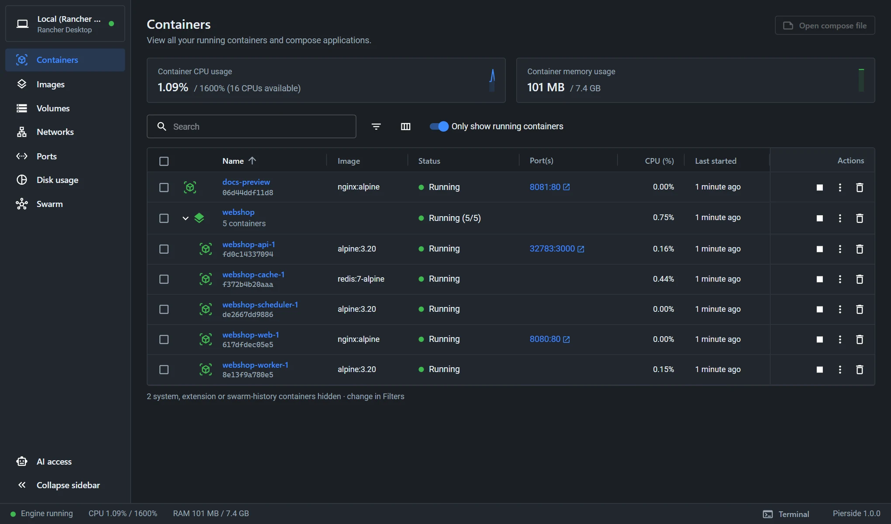
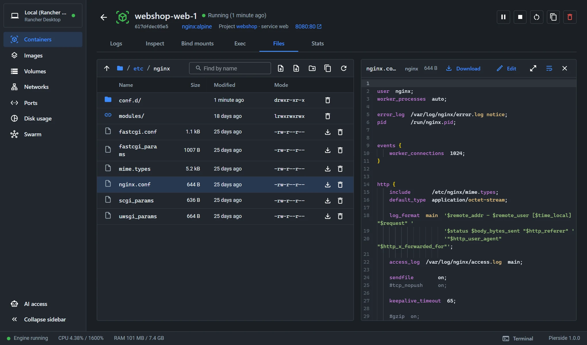

Server performance
Like htop, with each process's container next to it. CPU, memory, disks and network with 10-minute charts, a note when something stands out, and Lower priority, End or Force end on any process.
| Process | Container | CPU | Memory | Disk |
|---|
Free and open source · Rancher Desktop extension
Pierside adds a familiar container UI to Rancher Desktop: containers, Compose projects, images and volumes, on your own machine or on remote servers over plain SSH. And when you want help, your AI assistant can work with them too, within limits you set.
rdctl extension install ghcr.io/hemi131/pierside:latestrdctl extension install hemi131/pierside:latestNeeds Rancher Desktop 1.23+ with the dockerd (moby) engine. Windows, macOS, Linux · amd64 and arm64.

On every engine
If you know Docker Desktop, you already know Pierside: the same layout, the same actions, a few things done better. On your own machine and on every server alike.
Containers grouped by project, with Start all, Stop all, Up, Down and Pull. The logs of every service in one stream, colour-coded, in time order, with search and a filter per service. Projects stay listed after down.

Browse, find, upload and edit files in containers and volumes. Syntax highlighting, error checking for JSON, YAML and Compose files, a diff of your changes before saving, and the VS Code shortcuts you're used to.
Files, volumes and the editor →
Stacks, services, tasks, nodes, secrets and configs. Scale a service, update its image or roll it back, and see a task that keeps failing on any node before your users do.
Full-screen programs, resizing, word editing and your own command palette.
A shell even for slim images that have none of their own.
Reach a container's port on localhost without recreating it.
Pull with progress, run with options, inspect layers, prune.
Browse and edit what a volume holds; connect and disconnect containers.
What takes the space in Docker, with one-click clean-up.
Restart loops, out of memory, unhealthy: told once, with mute and pause.
Open Pierside in your browser on a second monitor.
AI access
Pierside is also an MCP server. Claude Code, Devin CLI or any other MCP client can read logs, check health, edit files or restart a service for you, but only on the engines, containers and actions you allow.
Session code K7QF · engine production
The question appears in Pierside, not in the assistant.
On your servers
Add a server with its address and an SSH key. Nothing is installed on it, and it doesn't even need SSH forwarding. Then Pierside gives you what you'd otherwise open a terminal, htop and du for.
Every server on one page: can it be reached, what runs, what uses the CPU and memory, which containers need attention. Switch with one click.
Like htop, with each process's container next to it. CPU, memory, disks and network with 10-minute charts, a note when something stands out, and Lower priority, End or Force end on any process.
| Process | Container | CPU | Memory | Disk |
|---|
What takes the space, folder by folder, measured gently in the background.
Browse, find and edit the server's own files. No permission as your user? Pierside does it through Docker, once you agree.
Opened through Docker: deploy may not read it.
A full shell on the server, and if you switch it on, as root through Docker, without sudo.
Memory almost full, swapping, high load, a disk filling up: you hear about it, even while you're on another engine.
localhostInstall Rancher Desktop, choose the dockerd (moby) engine, and run one command.